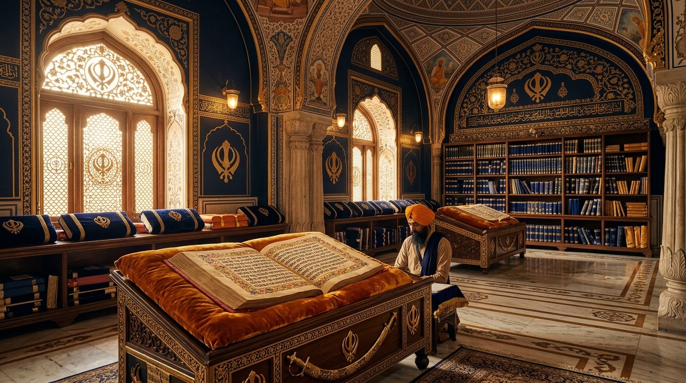

ੴ
ਗੁਰਮਤਿ ਗਿਆਨ ਭੰਡਾਰ • KHALSA SANCTUM
The Sacred Gurbani Library
Explore centuries of divine wisdom, illuminated Pothi Sahibs, 31 sacred Raags, and inspiring Gursikhi heritage.
ਆਤਮਿਕ ਯਾਤਰਾ • Spiritual Journey
Real-Time Divine Listening & Simran Hours
ਅਭਿਆਸੀ ਸਿੱਖ • Shabad Seeker
0h 00m
Total Divine Listening Time
0 min
Today's Simran
0h
This Week
0 Angs
Angs Read
1 Day
Active Streak
📜 Illuminated Pothi Sahib Shelves
ਪੁਰਾਤਨ ਸੰਗ੍ਰਹਿ
੧੪੩੦ ਅੰਗ • ੩੧ ਰਾਗ
ਸ੍ਰੀ ਗੁਰੂ ਗ੍ਰੰਥ ਸਾਹਿਬ ਜੀ
Sri Guru Granth Sahib Ji • The Eternal Living Shabad Guru
Open Sehaj Paath Reader ➔
੧੪੨੮ ਧਿਆਇ • ਬੀਰ ਰਸ
ਸ੍ਰੀ ਦਸਮ ਗ੍ਰੰਥ ਸਾਹਿਬ ਜੀ
Sri Dasam Granth Ji • Compositions of Sri Guru Gobind Singh Ji
Explore Spiritual Themes ➔
ਖ਼ਾਲਸਾ ਮਹਿਮਾ • ਸਿਦਕ
ਸ੍ਰੀ ਸਰਬਲੋਹ ਗ੍ਰੰਥ ਸਾਹਿਬ ਜੀ
Sri Sarbloh Granth Ji • Divine Hymns & Khalsa Praise
Explore Sikh Heritage ➔
ਕੁੰਜੀ ਗੁਰਬਾਣੀ ਦੀ • ੪੦ ਵਾਰਾਂ
ਵਾਰਾਂ ਭਾਈ ਗੁਰਦਾਸ ਜੀ
Vaaran Bhai Gurdas Ji • The Expository Key to Gurbani
Explore Divine Sakhis ➔
Today's Inspiration
ਮਨ ਤੂੰ ਜੋਤਿ ਸਰੂਪੁ ਹੈ ਆਪਣਾ ਮੂਲੁ ਪਛਾਣੁ
O my mind, you are the embodiment of the Divine Light — recognize your own origin.
💎 Divine Virtue of the Day
Contentment (ਸੰਤੋਖ)
True peace comes from accepting Waheguru's will. Freedom from greed and worldly desire leads to lasting inner serenity.
ਸੰਤੋਖੁ ਸੁਖੁ ਊਪਜੈ ਦੂਜੈ ਦੁਖੁ ਨ ਹੋਇ
— Guru Arjan Dev Ji📚 Gursikhi Knowledge Hub
Sikh History
ਸਿੱਖ ਇਤਿਹਾਸ • Key Eras
Chronology
Divine Sakhis
ਸਾਖੀਆਂ • Life Lessons
Stories
31 Raags
੩੧ ਰਾਗ • Musical Melodies
31 Melodies
35 Authors
੩੫ ਰਚਣਹਾਰ • Gurus & Bhagats
35 Contributors
Spiritual Themes
ਰੂਹਾਨੀ ਵਿਸ਼ੇ • Core Concepts
Teachings
Guru Sahibaan
੧੧ ਗੁਰੂ ਸਾਹਿਬਾਨ • Eternal Light
11 Gurus
Daily Gursikhi Quiz
Who compiled the Adi Granth in 1604 at Sri Amritsar Sahib?
🧭 Explore Gurbani Gateways
📿
ਨਿਤਨੇਮ – Sacred Daily Banis
Read and listen to morning & evening Banis
🔍
ਖੋਜ – Gurbani Search Engine
First letter, word & Ang search across SGGS Ji
📜
ਹੁਕਮਨਾਮਾ – Daily Hukamnama
Today's divine royal command from Sachkhand Sri Harmandir Sahib
📖
ਸਹਿਜ ਪਾਠ – Sehaj Paath Reader
Continuous sacred reading of Sri Guru Granth Sahib Ji
✨ Essential Banis & Shabads
ੴ ਸਤਿ ਨਾਮੁ ਕਰਤਾ ਪੁਰਖੁ
ਅਨੰਦੁ ਭਇਆ ਮੇਰੀ ਮਾਏ ਸਤਿਗੁਰੂ ਮੈ ਪਾਇਆ
ਗਉੜੀ ਸੁਖਮਨੀ ਮਹਲਾ ੫